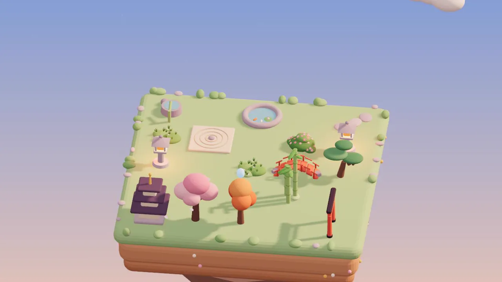

Floppy Key · Disk 04 · Free prototype
Tsuyu
A tiny zen garden that grows with you.
A floating island and a single little plant. Water it, collect drops of morning dew and slowly build your own Japanese garden, one stone, one lantern and one cherry tree at a time.
The trailer
Water. Collect. Grow.
No timers nagging you, no fail states, no rush. Just soft colours, gentle bells and a garden that keeps growing while you're away.
Water a tiny plant
Tap the little plant to water it. Once it grows, it makes dew on its own, and every tap collects a little more.
Choose what comes next
Spend your dew in the shop on new plants and decorations. New plants need watering first; then they make dew too.
Find the harmony
Decorations raise Harmony, which multiplies all your dew. Every different piece adds a little more, so variety pays off.
- 6plants
- 9decorations
- 3×3 → 9×9an island that grows
- 10 mina full day
- EN · ESEnglish and Spanish
- 4seasons, with their own weather
- 🎮full controller support
It starts with one little plant
Everything begins with a cushion of moss on a 3×3 island floating in the sky. Tap it and drops of water splash around it. Keep tapping and it grows.
Drag to turn the island, and use Decorate to move, rotate or store anything you've placed. When you run out of room, the island grows.
Build your own Japanese garden
Every plant and decoration is made of soft clay. Place them wherever you like and find the arrangement that feels right.
Plants
- Moss
- Bamboo
- Satsuki azalea
- Bonsai pine
- Japanese maple
- Cherry tree
Decorations
- Raked gravel
- Stones
- Stepping path
- Tōrō lantern
- Tsukubai
- Koi pond
- Red bridge
- Torii
- Pagoda
Through every season
Every three days the garden turns to a new season, slowly blending from one to the next.
- 🌸 Spring: cherry blossoms and drifting petals
- 🌿 Summer: deep greens and more fireflies at night
- 🍁 Autumn: red maples, golden grass and falling leaves
- ❄️ Winter: snow on the lanterns, roofs and treetops
Time keeps passing while you're away, so you might close the game in autumn and come back to a snowy garden.
Watch the day melt into night
A full day passes every ten minutes: a pink sunrise, a golden dusk, and nights full of stars and fireflies, with warm paper-lantern light spilling over the gravel.
Lanterns double their Harmony at night, so the garden is a little more generous after dark.
And every tap rings a soft note, a bell or a koto, in the same key as the music. Nothing ever sounds out of tune. Best with headphones.
Tsuyu means “dew”.
A free early prototype: about five hours to unlock everything, in your browser or on Windows, with mouse, touch or a controller, in English and Spanish. Your garden is saved automatically and keeps growing while you're away. Made by one person in Argentina.
The music and sound effects were generated with AI (ElevenLabs) from my own direction. The design, the garden and everything in it are mine.